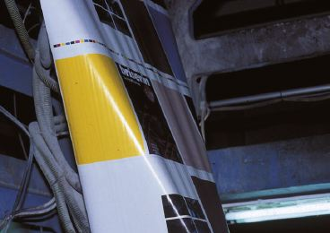
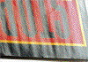
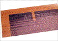
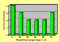

WELLENBILDUNG IM ROLLENOFFSET
|
Eine Wellenbildung stellt das Erkennungsmerkmal
des Rollenoffsetdrucks dar. Es handelt sich dabei
um eine parallel zur Faserlaufrichtung verlaufende,
wellenartige Verformung des Papiers nach dem Druck
(Abb. 1 und Abb. 2). Die Wellenbildung wird meist
wegen optischer Beeinträchtigung des
Druckergebnisses reklamiert (siehe auch Kapitel:
Wellenbildung im Buchblock).
|

|
Abb. 1: Wellenbildung im Rollenoffset - Aufnahme im
Falzapparat.
|
|
|
|
Mögliche Ursachen:
|
|
|
|
Abb. 2: Wellenbildung im Rollenoffset.
|
|
|
|
|
|
Abb. 3: Wellenbildung bereits kurz nach der
Rollenabwicklung, vor den Druckwerken.
|
|
|
|

|
|
Abb. 4: Wellenbildung im Rollenoffset.
|
|
|
|
|
|
Abb. 5: Wellenbildung im Rollenoffset.
|
|
|
|

|
|
Abb. 6: Vom Kunden wegen Wellenbildung
reklamierter Druck.
|
|
|
|

|
|
Abb. 7: Tendenzielle Verringerung der
Wellenbildung durch Rückbefeuchtung.
|
|
|
|

|
|
|
|
|
|

|
|
|
|
|
|
|
Wellenbildung im Rollenoffset ist prozessbedingt und muss
bis zu einem gewissen Grad akzeptiert werden. Der
Wellenbildung liegt folgender Wirkmechanismus zugrunde:
Grundsätzlich ist davon auszugehen, dass das Papier
durch die Bahnspannung beim Durchlauf durch die
Druckmaschine auch bei optimaler Einstellung einer Dehnung
ausgesetzt ist. Daraus resultiert eine nicht zu verhindernde
Querschrumpfung der Papierbahn. Diese Querschrumpfung
verursacht bereits beim Bahneinzug eine Wellenbildung
parallel zur Laufrichtung des Papiers (Abb. 3). Weiterhin
werden die Wellen durch Hitzeeinwirkung im Trockner
versteift und fixiert. Hinzu kommt eine starke Austrocknung
des Papiers. Ein weiterer Schrumpfprozess mit dem Resultat
einer verstärkten Wellenbildung ist die Folge (Abb. 4
und Abb. 5).
Leichtgewichtige Papiere neigen besonders zur Wellenbildung,
was sich vornehmlich bei hohen Farbanteilen auswirkt.
Als papierbedingte Einflüsse auf die Wellenbildung sind
das Dehnungs- bzw. Schrumpfungsverhalten, die
Biegesteifigkeit quer und die Ausgangsfeuchte bekannt.
Papiere mit starkem Dehnungs- bzw. Schrumpfungsverhalten
reagieren dabei stärker mit Wellenbildung.
Auch eine geringe Biegesteifigkeit in Querrichtung
begünstigt die Schrumpfung der Papierbahn unter dem
Einfluss der Bahnspannung und der Hitzeeinwirkung.
Es ist aus Untersuchungen bekannt, dass Papiere mit einer
Ausgangsfeuchte von > 50 % relative Feuchte
verstärkt mit Wellenbildung reagieren.
Ungünstige Einstellungen der Heißlufttrockner (zu
hohe Temperatur) verursachen eine übermäßige
thermische Belastung des Papiers und üben einen
ungünstigen Einfluss auf die Wellenbildung aus.
Bei zu hoher Bahnspannung steigt die Gefahr der
Wellenbildung.
Falls mit Rückbefeuchtungsaggregaten im Rollenoffset
produziert wird, kann durch eine zu hohe
Rückbefeuchtungsmenge eine Verstärkung der
Wellenbildung hervorgerufen werden. Als empfohlener
Grenzbereich gilt dabei eine relative Feuchte im Papier von
30 % bis 35 % nach dem Druck.
|
Mögliche Abhilfen:
|
|
Unterfarbenreduktion oder Unbuntaufbau bei der
Filmherstellung kann in den Bildtiefen zu einer Reduzierung
der Flächendeckungsgrade von annähernd 400 % je
nach Motiv bis zu 250 % führen. Das ergibt eine
deutliche Verminderung der Gesamtschichtdicke der
Druckfarbe, bei der die Trocknungstemperatur evtl.
vermindert werden kann. Ein Faktor, der zu einer geringeren
Wellenbildung verhelfen kann.
Durch den Einsatz von Druckfarben mit einem hohen Anteil von
niedrigsiedenden Mineralölen wird weniger Energie zur
Verdunstung und Verdampfung der Mineralöle
benötigt. Dadurch wird auch die Papierbahn mit weniger
Hitze belastet, was zu geringerer Wellenbildung
führt.
Durch optimale Umluft- und Abluftregelung wird die
Mineralölkonzentration im Trockner reduziert, was zu
verbesserter Druckfarbentrocknung bei geringerer
Trocknungsenergie beiträgt. Bei geringerer
Trocknungsenergie sinkt die Gefahr der Wellenbildung.
Die Bahnspannung sollte speziell bei leichtgewichtigen
Papieren feinfühlig eingestellt werden.
Untersuchungen haben gezeigt, dass die Wellenbildung durch
eine sensible Einstellung von Rückbefeuchtungsanlagen,
sofern Rollenoffsetmaschinen damit ausgestattet sind,
tendenziell zu reduzieren ist.
|
Beispiel(e):
|
|
Rollenoffset ist nicht Bogenoffset:
Ein Kunde gab für eine Messe 4/4-farbige Prospekte in
Auftrag. Da es aus Zeit- und Kapazitätsgründen
nicht mehr möglich war, den Auftrag im Bogenoffset zu
drucken, wurde dem Kunden ein Druck im Rollenoffset
angeboten. Nachdem man dem Kunden absolut gleiche
Druckqualität wie im Bogenoffset versprach stimmte
dieser dem Auftrag zu. Vier Tage vor Messebeginn waren die
Prospekte gedruckt, klammergeheftet und zur Auslieferung
bereit. Diese Drucke waren jedoch für den Kunden in
keinster Weise akzeptabel. Speziell mit dem Hintergrund,
dass ihm die gleiche Druckqualität wie im Bogenoffset
garantiert wurde, reklamierte der Kunde die Wellenbildung
(Abb. 6).
In einer FOGRA-Stellungnahme wurde bestätigt, dass es
sich bei der Wellenbildung um ein prozessbedingtes Problem
des Rollenoffsetdrucks handelt und dass die beanstandete
Wellenbildung als „normal üblich“ bezeichnet
werden muss. Da seitens der Druckerei allerdings die gleiche
Qualität wie im Bogenoffset versprochen worden war, war
das Endergebnis als „nicht akzeptabel“ zu
betrachten. In einer Sonderschicht wurde die gesamte Auflage
nochmals im Bogenoffset gedruckt und die Prospekte konnten
mit eintägiger Verspätung zur Messe mit der
gewünschten (und versprochenen) Qualität
ausgeliefert werden.
Rückbefeuchtung im Rollenoffset zur Reduzierung der
Wellenbildung:
Im Rahmen eines vom Bundesverband Druck und Medien e.V.
geförderten Forschungsthemas wurde die Effizienz von
Rückbefeuchtungsanlagen im Rollenoffset getestet. Zu
diesem Zweck erfolgten Druckversuche in Druckereien, die mit
den unterschiedlichen Rückbefeuchtungssystemen
ausgestattet waren. Bei diesen Versuchen wurde mit
unterschiedlichen Einstellungen der
Rückbefeuchtungsanlage produziert. Ziel der Testreihe
war es, den Einfluss der Rückbefeuchtung auf die
Erhöhung der relativen Feuchte im Papier nach dem
Druck, auf die Reduzierung der Wellenbildung und auf die
Reduzierung des Falzbrechens zu untersuchen.
Ein Teilergebnis dieser Versuchsreihe ist in Abb. 7
dargestellt.
Es gelten bei der visuellen Einstufung folgende
Bewertungsschlüssel:
1 = geringe Wellenbildung
2 = geringe bis mittlere Wellenbildung
3 = mittlere Wellenbildung
4 = starke Wellenbildung
Beim Versuch ohne Rückbefeuchtung wurde die
Wellenbildung nach dem Druck von mehreren Testpersonen mit
„stark“ bezeichnet. Bei Erhöhung der
Rückbefeuchtungsmenge konnte die Wellenbildung
teilweise reduziert werden. Eine deutliche Verringerung der
Wellenbildung durch Rückbefeuchtung war jedoch in
keinem Fall möglich. Bei der Wellenbildung handelt es
sich um eine bereits fixierte Verspannung im Papier, die
sich nachträglich nur noch schwer kompensieren
lässt.
Bei einer Überdosierung der Rückbefeuchtung
resultierte bei den im Diagramm dargestellten
Versuchsergebnissen sogar eine Erhöhung der
Wellenbildung. Als Fazit konnte festgehalten werden, dass es
bei sorgfältiger Einstellung der Rückbefeuchtung
möglich ist, die Wellenbildung zu reduzieren.
|
Allgemeine Hinweise:
|
|
Für den Reklamationsfall:
Druckausfallmuster sicherstellen.
Unbedruckte Papermuster und unbedruckte Vergleichsmuster
sicherstellen (ca. 20 Blatt DIN A4).
Produktionsdaten protokollieren.
Ausgangsfeuchte des Papiers bestimmen.
Ergänzende Literatur:
FALTER, K.-A.; SCHMITT, U.:
Einfluss der Hitzeeinwirkung beim Druckprozess auf die
Festigkeitseigenschaften und die
Dimensionsveränderungen des Druckpapiers.
München: Forschungsgesellschaft Druck e. V., 1989,
(4.035), - Forschungsbericht
WEISSENBORN, M.:
Wellenbildung - Problemkreis ohne objektiven
Beurteilungsgrad.
In: Print Nr. 9, 1993, S. 10 - 13
FALTER, K.-A.; KIRMEIER, M.:
Erfassung der Wirkungsweise von Rückbefeuchtungsanlagen
in Rollenoffsetmaschinen.
Wiesbaden: Bundesverband Druck und Medien e.V., 1995, -
Informationen (Artikel Nr. 86450)
BOSSE, R.: Trocknen im Rollenoffset - Bahnkantenflattern und
Turbulenzen. In: Polygraph, 51. Jahrgang, 3/4, 1998, -
Sonderdruck
|
|
|
|
|
|
|
Kontakt:
wimmerm@fogra.org
|
Wel-mw-200112
|